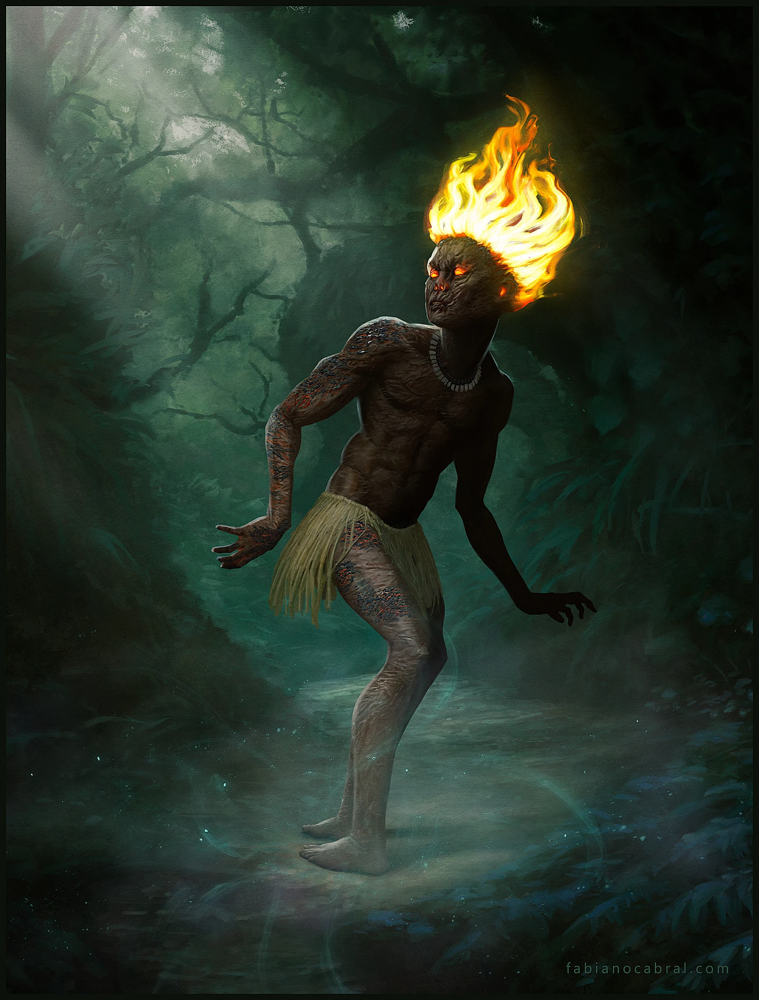
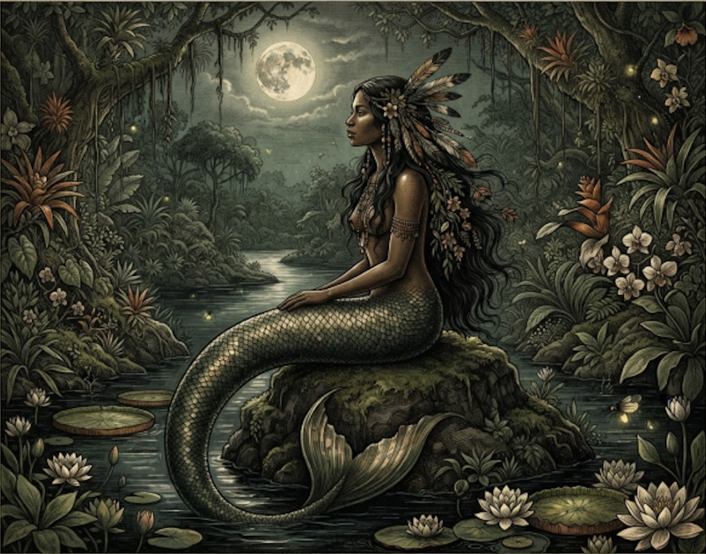
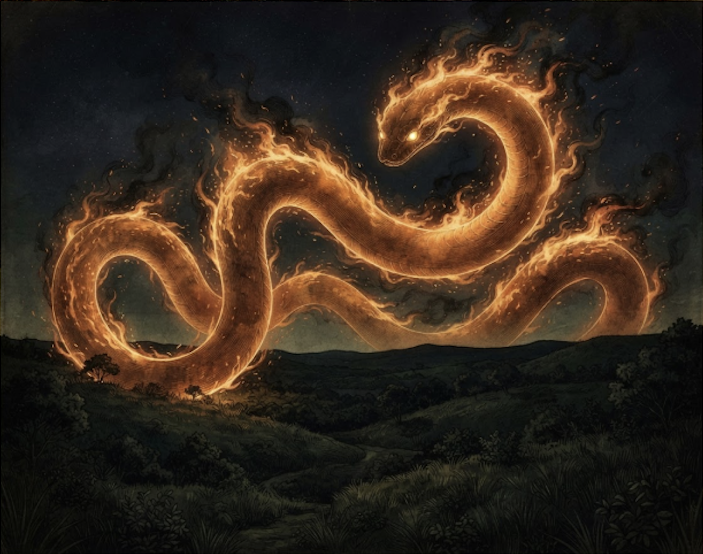
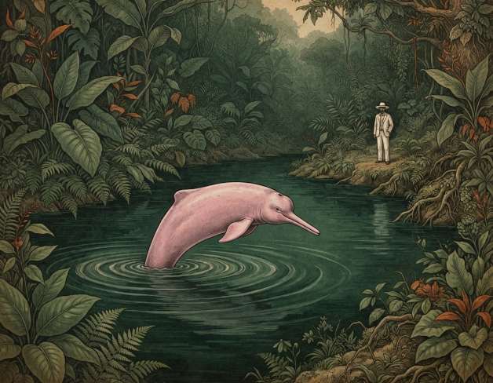
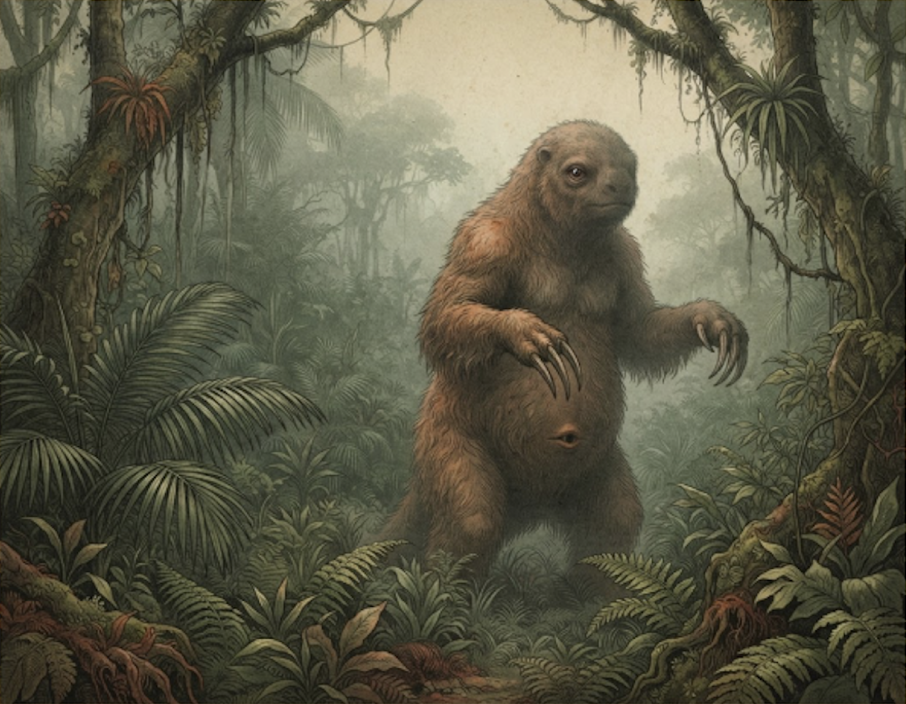
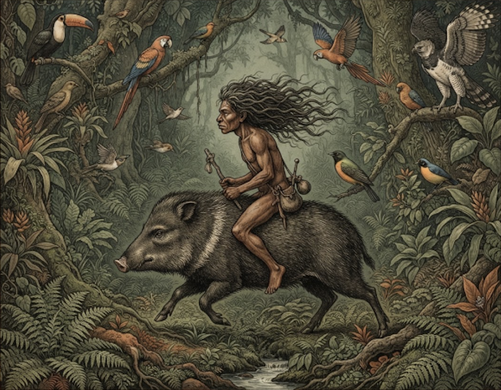

NORTE / FLORESTA AMAZÔNICA
Curupira
Protege a fauna e a flora com seus cabelos de fogo e pés virados para trás, enganando caçadores com pegadas falsas.
EXIBINDO SERES DO FOLCLORE BRASILEIRO DA REGIÃO NORTE

Protege a fauna e a flora com seus cabelos de fogo e pés virados para trás, enganando caçadores com pegadas falsas.

Uma sereia dos rios de beleza hipnotizante e voz melodiosa que atrai pescadores para o fundo das águas.

Uma cobra gigante de fogo transparente que protege os campos e matas contra queimadas e destruição.

Um ser encantado que se transforma em um jovem elegante e charmoso para seduzir mulheres durante festas.

Uma criatura gigante e peluda com um olho só na testa e uma boca enorme na barriga.

Um pequeno indígena de cabelos vermelhos que cavalga um caititu protegendo os animais da floresta.

Uma serpente ou minhoca gigantesca que habita o subsolo, escavando grandes galerias e derrubando barrancos de rios.